KF-21 Boramae – Korea Płd.
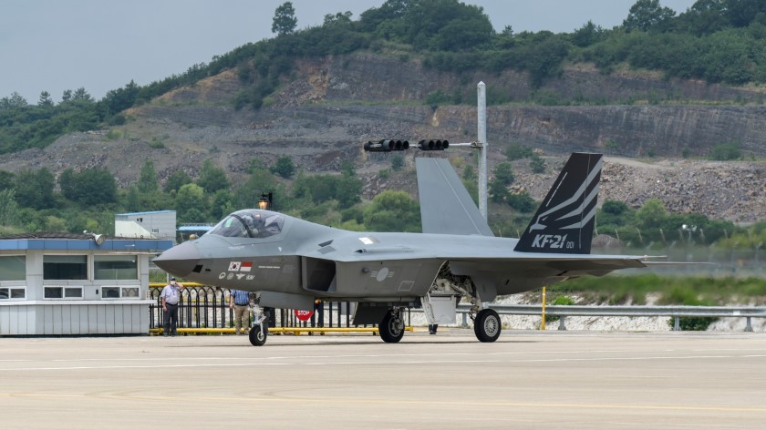KF-21 Boramae to nowoczesny myśliwiec 4,5 generacji zaprojektowany przez Koreę Południową. Samolot ma wzmocnioną konstrukcję kadłuba i nowoczesny radar AESA. Jego systemy awioniki i walki elektronicznej pozwalają na przewagę w regionie Azji. Boramae cechuje wysoka manewrowość i możliwość integracji z nowoczesnym uzbrojeniem. Maszyna może wykonywać misje powietrze-powietrze oraz powietrze-ziemia. Program ma charakter strategiczny dla Korei. Samolot wspiera rozwój krajowego przemysłu obronnego. Jego produkcja ma potencjał eksportowy. KF-21 jest symbolem samowystarczalności technologicznej Korei. Maszyna stale przechodzi testy i modernizacje.
STATUS: TAJNE
Radar: AESA
Zasięg: 3 000 km
F-16 Fighting Falcon – USA
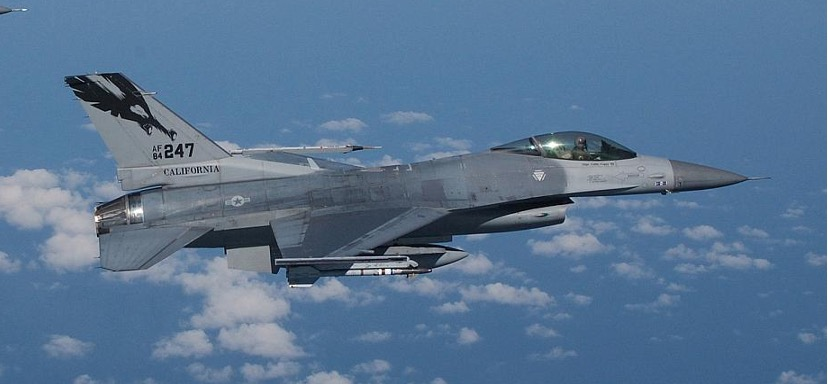F-16 Fighting Falcon to jeden z najbardziej rozpowszechnionych myśliwców wielozadaniowych na świecie. Został zaprojektowany jako lekki, szybki i bardzo zwrotny samolot bojowy. Jego konstrukcja pozwala na wykonywanie misji powietrze–powietrze oraz powietrze–ziemia. F-16 posiada nowoczesną awionikę, radar oraz systemy walki elektronicznej. Samolot jest regularnie modernizowany i dostosowywany do współczesnych zagrożeń. Jest używany przez wiele państw NATO oraz sojuszników USA. F-16 łączy wysoką skuteczność bojową z relatywnie niskimi kosztami eksploatacji. Do dzisiaj pozostaje ważnym elementem sił powietrznych wielu krajów.
STATUS: TAJNE
Zasięg bojowy: 1 500 km
Radar: AESA AN/APG-83
Rola: myśliwiec wielozadaniowy
Zdolności: wysoka manewrowość, precyzyjne uderzenia
Status: szeroko używany przez NATO
IAI Kfir – Izrael

IAI Kfir to izraelski wielozadaniowy myśliwiec opracowany na bazie Mirage. Został przystosowany do potrzeb Bliskiego Wschodu, wyposażony w silnik amerykański i nowoczesne systemy elektroniczne. Maszyna była wykorzystywana w licznych operacjach bojowych. Charakteryzuje się wysoką manewrowością i możliwością przenoszenia szerokiego arsenału broni. Kfir jest tani w utrzymaniu i nadaje się do szybkiego wdrożenia. Samolot służy jako symbol izraelskiej innowacyjności technologicznej. Jest stale modernizowany i rozwijany. Maszyna posiada zdolności przewagi informacyjnej w powietrzu. IAI Kfir jest jednym z filarów lotnictwa Izraela.
STATUS: TAJNE
Radar: AESA
Zasięg: 2 500 km
Eurofighter Typhoon – Europa
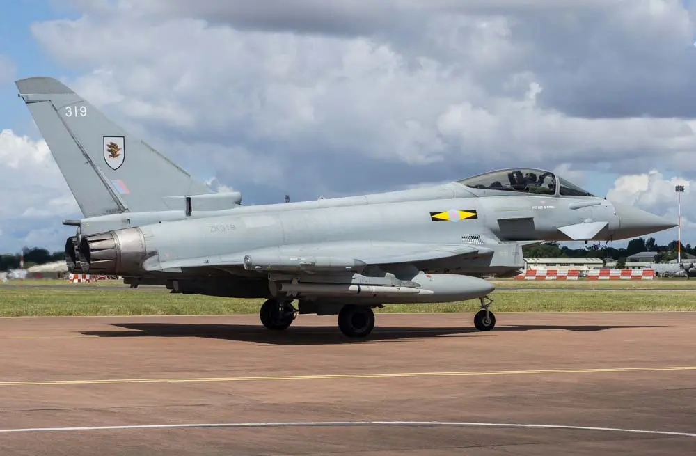Eurofighter Typhoon to europejski myśliwiec przewagi powietrznej opracowany wspólnie przez kilka państw UE. Samolot charakteryzuje się dużą manewrowością i nowoczesną awioniką. Może wykonywać misje powietrze-powietrze i powietrze-ziemia. Typhoon jest sukcesywnie modernizowany i wciąż unowocześniany. Integruje nowoczesne pociski i bomby precyzyjne. Maszyna jest wykorzystywana przez wiele państw NATO. Jest kluczowa w strategii obrony powietrznej Europy. Eurofighter Typhoon umożliwia szybkie reagowanie na zagrożenia. Jest symbolem współpracy europejskiej. Maszyna posiada systemy walki elektronicznej i wsparcia informacyjnego.
STATUS: TAJNE
Radar: AESA
Zasięg: 3 500 km
HAL Tejas – Indie
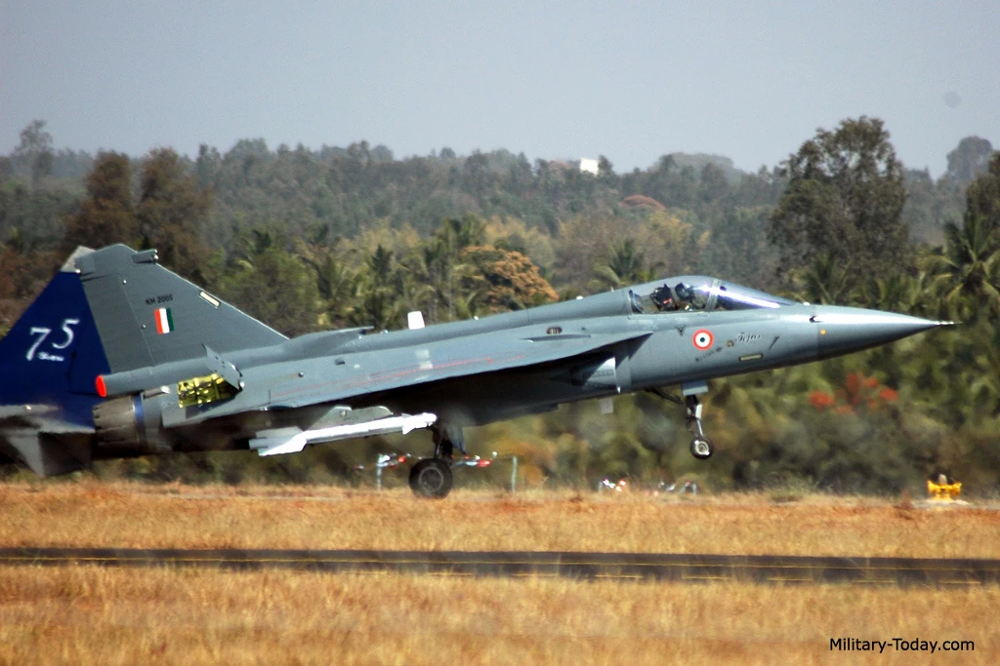HAL Tejas to indyjski lekki myśliwiec wielozadaniowy opracowany w celu uniezależnienia kraju od importu. Maszyna ma nowoczesną awionikę i jest stopniowo modernizowana. Tejas jest lekki, zwrotny i zdolny do różnorodnych misji. Maszyna wspiera lokalny przemysł zbrojeniowy. Zapewnia przewagę powietrzną w regionie. Tejas posiada możliwość integracji nowoczesnych pocisków i systemów walki elektronicznej. Samolot przeszedł liczne testy bojowe. Jest symbolem indyjskiej samowystarczalności technologicznej. Maszyna ma potencjał eksportowy. Program Tejas jest kluczowym projektem obronnym Indii.
STATUS: TAJNE
Radar: AESA
Zasięg: 1 700 km
JF-17 Thunder – Pakistan / Chiny
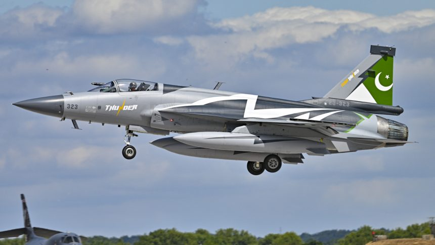JF-17 Thunder to lekki wielozadaniowy myśliwiec stworzony w ramach współpracy Pakistanu i Chin. Maszyna jest tanią, skuteczną i łatwą w utrzymaniu platformą bojową. Posiada nowoczesne systemy uzbrojenia oraz radar. Jest wykorzystywana w wielu misjach powietrze-powietrze i powietrze-ziemia. Samolot jest stale modernizowany. JF-17 zwiększa niezależność wojskową Pakistanu. Maszyna ma wersje eksportowe. Jest symbolem strategicznego partnerstwa. Posiada wysoką manewrowość i dobry zasięg. Samolot przeszedł liczne testy bojowe.
STATUS: TAJNE
Radar: AESA
Zasięg: 1 200 km
MiG-35 – Rosja
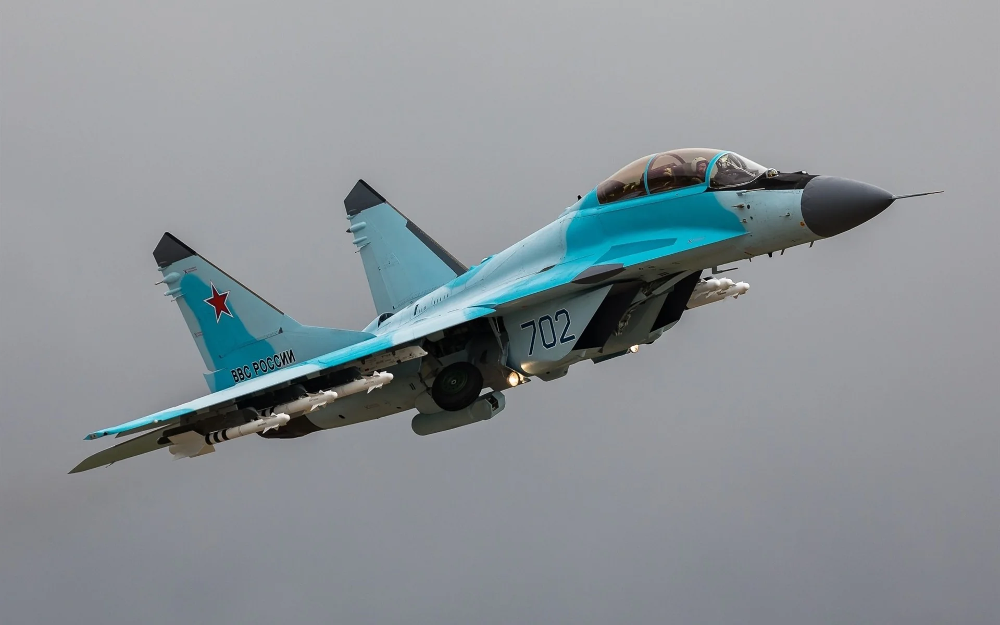MiG-35 to rosyjski wielozadaniowy myśliwiec 4++ generacji. Jest rozwinięciem rodziny MiG-29 z nowoczesną awioniką i radarami AESA. Maszyna cechuje się wysoką manewrowością, dużą prędkością i możliwością przenoszenia nowoczesnego uzbrojenia. MiG-35 może wykonywać misje powietrze-powietrze i powietrze-ziemia. Samolot jest częścią strategii modernizacji rosyjskiego lotnictwa. Posiada zaawansowane systemy walki elektronicznej i nawigacji. Maszyna zwiększa zdolności obronne i ofensywne. Jest eksportowana do wybranych krajów. MiG-35 to symbol rosyjskiej inżynierii lotniczej. Samolot stale przechodzi testy i udoskonalenia.
STATUS: TAJNE
Radar: AESA
Zasięg: 1 800 km
F/A-18 Super Hornet – USA
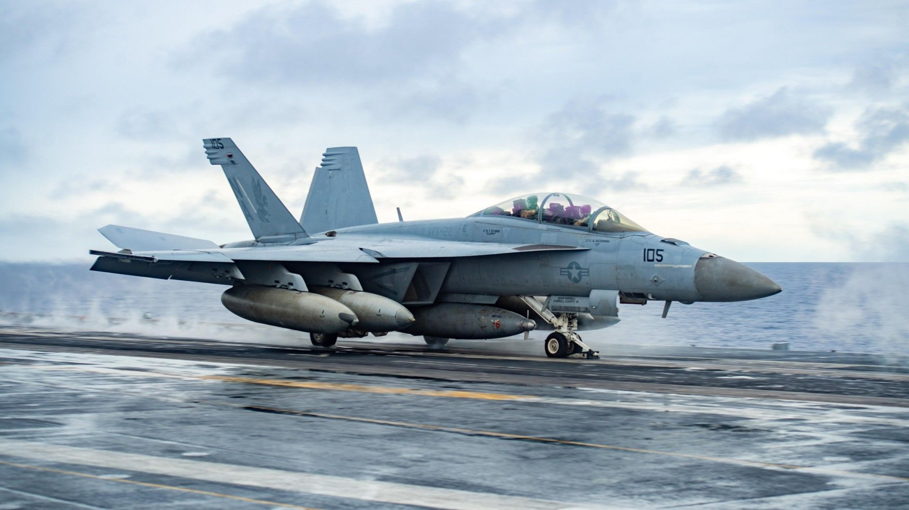F/A-18 Super Hornet to nowoczesny myśliwiec pokładowy przeznaczony do operowania z lotniskowców. Samolot został zaprojektowany jako maszyna wielozadaniowa, zdolna do prowadzenia walk powietrznych oraz ataków naziemnych i morskich. Charakteryzuje się wysoką niezawodnością i odpornością na trudne warunki bojowe. Super Hornet posiada zaawansowany radar AESA oraz systemy walki elektronicznej. Jest podstawowym myśliwcem marynarki wojennej Stanów Zjednoczonych. Może przenosić szeroki wachlarz uzbrojenia precyzyjnego. Samolot zapewnia wysoką elastyczność operacyjną i szybkie reagowanie na zagrożenia.
STATUS: TAJNE
Zasięg: 2 000 km
Radar: AESA AN/APG-79
J-35 – Chiny
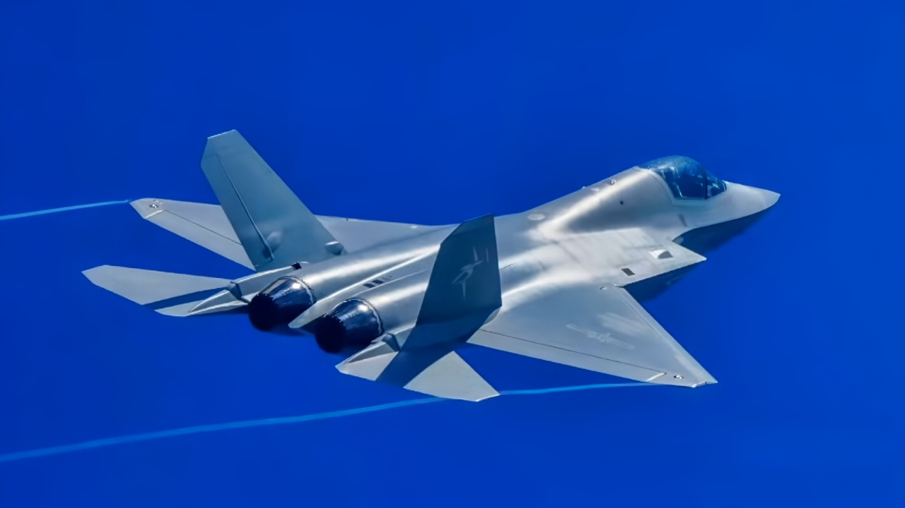J-35 to chiński myśliwiec 5 generacji, rozwijany w celu zapewnienia przewagi powietrznej i wsparcia strategicznego. Maszyna posiada stealth, nowoczesne radary AESA i systemy walki elektronicznej. J-35 jest kluczową częścią chińskiej strategii morskiej i powietrznej. Samolot może wykonywać misje powietrze-powietrze oraz precyzyjne uderzenia na cele naziemne. Maszyna posiada dużą prędkość, manewrowość i zasięg. J-35 wspiera eksport technologii wojskowych Chin. Jest symbolem chińskiej autonomii technologicznej w lotnictwie wojskowym. Maszyna jest regularnie testowana i modernizowana.
STATUS: TAJNE
Radar: AESA
Zasięg: 2 500 km
F-15 Eagle – USA
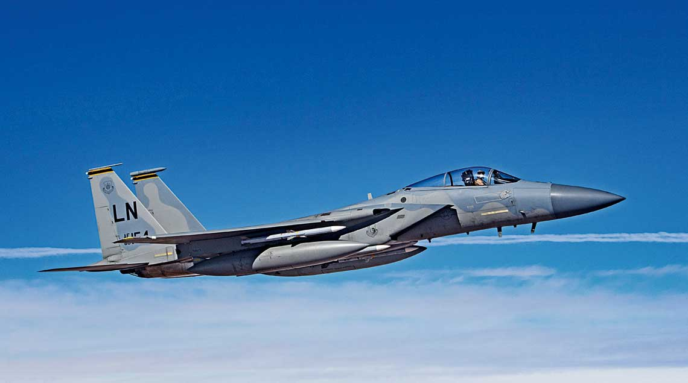F-15 Eagle to amerykański myśliwiec przewagi powietrznej, znany z wysokiej prędkości, manewrowości i skuteczności bojowej. Maszyna jest używana od lat 70. i wciąż jest modernizowana. Posiada nowoczesną awionikę, radar AESA i możliwość przenoszenia szerokiego wachlarza uzbrojenia. F-15 może wykonywać misje powietrze-powietrze oraz powietrze-ziemia. Samolot jest symbolem siły lotnictwa USA i sojuszników NATO. Charakteryzuje się niezawodnością i elastycznością w działaniu. Maszyna była testowana w wielu konfliktach i pozostaje kluczowym elementem obrony powietrznej.
STATUS: TAJNE
Radar: AESA
Zasięg: 3 500 km
Saab Gripen – Szwecja
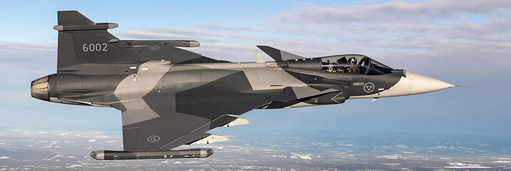Saab Gripen to szwedzki lekki myśliwiec wielozadaniowy, charakteryzujący się niskimi kosztami eksploatacji i nowoczesną awioniką. Maszyna może wykonywać misje powietrze-powietrze i powietrze-ziemia. Jest wykorzystywana przez Szwecję oraz kilka innych państw. Gripen cechuje się wysoką manewrowością, łatwością serwisowania i integracji nowych systemów. Maszyna posiada nowoczesne radary i systemy walki elektronicznej. Samolot jest symbolem innowacyjności szwedzkiego przemysłu lotniczego. Może działać w różnych warunkach klimatycznych. Gripen stale jest modernizowany i rozwijany.
STATUS: TAJNE
Radar: AESA
Zasięg: 3 200 km
Dassault Rafale – Francja
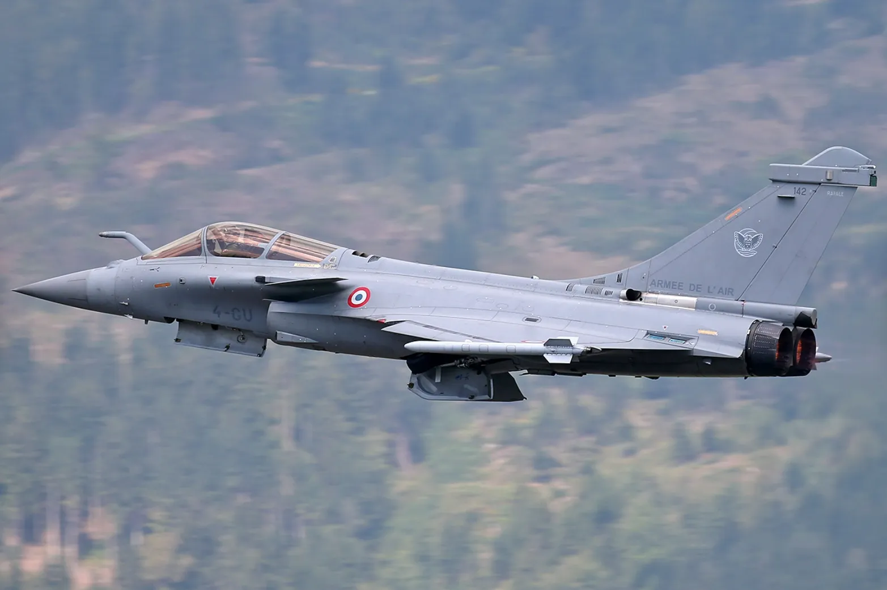Dassault Rafale to francuski myśliwiec wielozadaniowy 4,5 generacji, zdolny do działań powietrze-powietrze, powietrze-ziemia i morsko-lądowych. Maszyna posiada stealth, radar AESA i nowoczesną awionikę. Rafale jest elastyczny w operacjach bojowych i łatwy w integracji nowych systemów. Samolot może przenosić szeroką gamę precyzyjnych pocisków i bomb. Maszyna jest symbolem francuskiego przemysłu lotniczego i sił powietrznych. Rafale jest eksportowany do wybranych krajów i stale modernizowany. Posiada dużą manewrowość, zasięg i zdolności do prowadzenia kompleksowych misji bojowych.
STATUS: TAJNE
Radar: AESA
Zasięg: 3 700 km